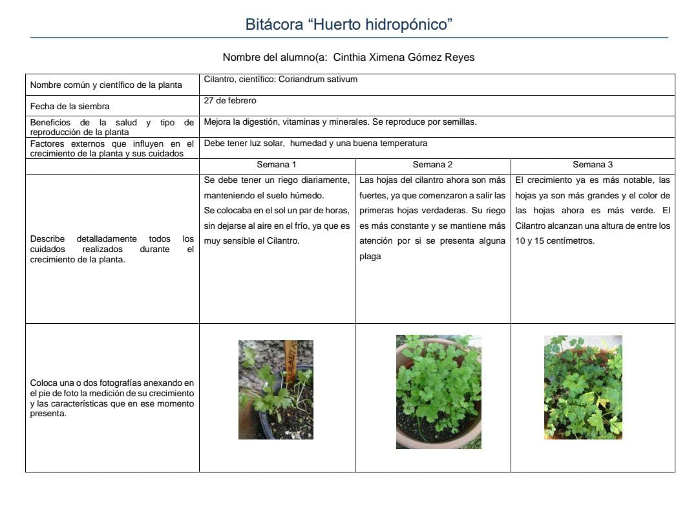
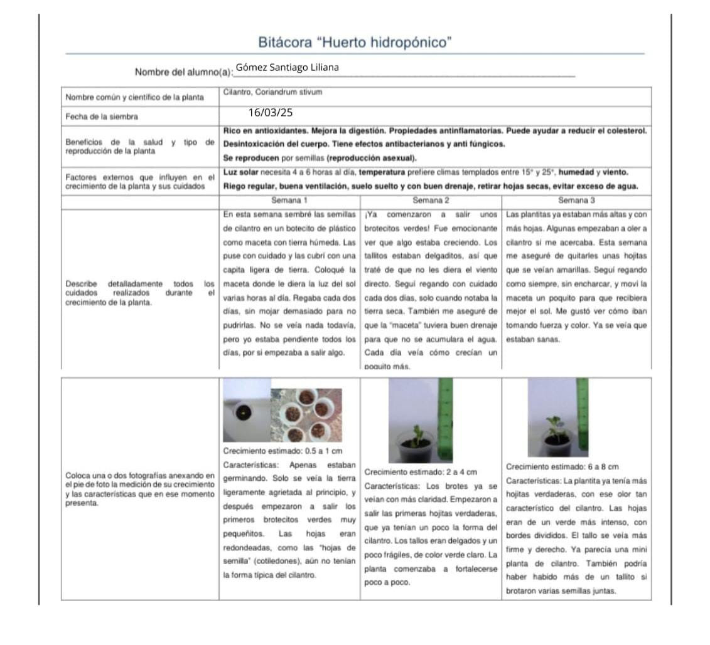
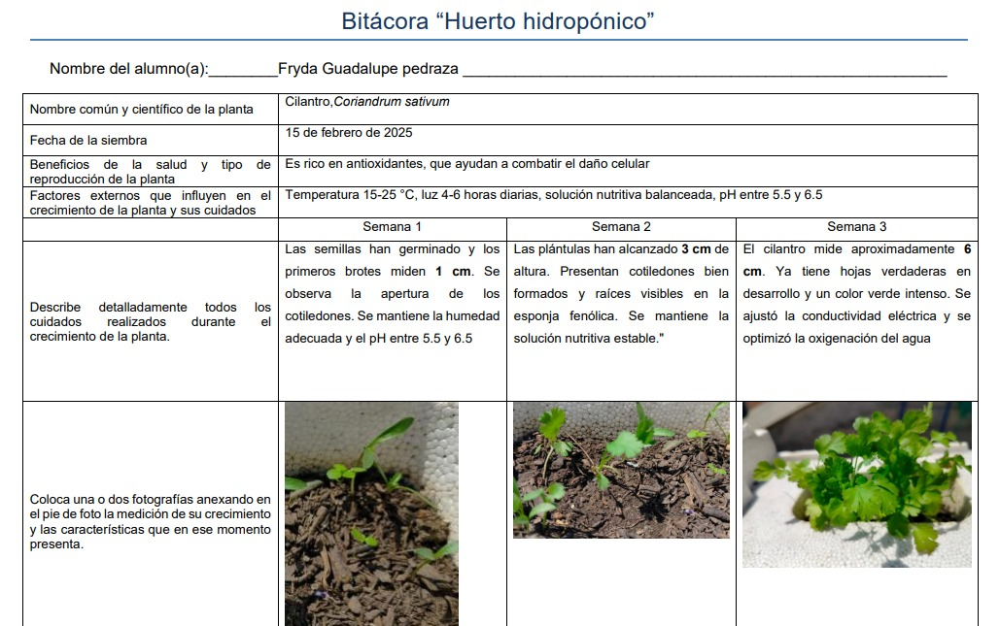
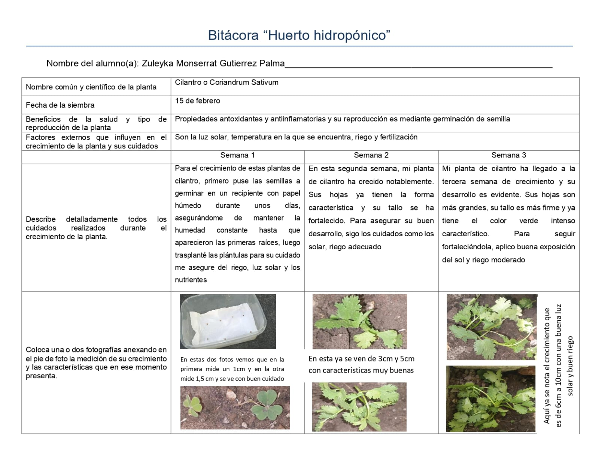

Inicio Ventajas Técnicas Materiales Bitacora
Garduño Castillo Dulce Maria 1
Gomez Reyes Cinthia Ximena 2
Gomez Santiago Liliana 3
Guadalupe Pedraza Fryda 4
Gutierrez Palma Zuleyka Monserrat 5
Vuelve a la página principal
Si quieres más información acerca de nuestro´ proyecto transversal visita nuestro trabajo P.Transversal